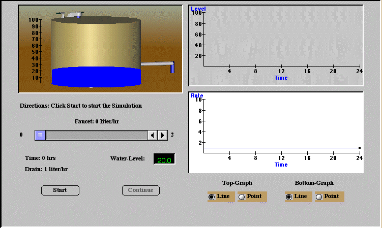

BudgetSim Simulation
Introduction
The origins of this simulation involved the desire to convert a standard introductory meteorology lecture course into one where constructivism was the main instructional model and students were expected to take a more active role in their own learning-all without reduction of class size. The course goals were expanded to include learning how to learn science as well as learning science content. One of the major tools used to accomplish this was the use of World Wide Web server software that manages Internet class activities. ClassNet, (Van Gorp and Boysen, 1997), was developed to accomplish this task (http://classnet.cc.iastate.edu/). This tool allowed every student to be an active participant in learning activities with easy access to course materials, enhanced communication with the instructor and other students, rapid feedback concerning assignment and exam scores, and ready access to their private records of course performance.
Course materials have been designed for introductory science courses at the secondary and college level. They are intended to be supplemental to the course, allowing the instructor to decide which materials to use and which to omit. Experience with these materials has shown that their effect, especially the effect of the simulations is gradual and sufficient time must be allowed to observe a difference in student behavior and attitude. At Iowa State University students often find the simulations to be uncomfortable at first because they use them before they hear the corresponding lectures, but this approach is deliberate and is intended to create questions in students' minds so they will come to class seeking answers.
It is recommended that part of class time be allotted to the use of Small Group Activities. These allow students the opportunity to break away from the passive mode utilized in most large-scale classes and become more active learners. These activities have been well received by students. They often end up sitting in about the same place in the auditorium for every class meeting and usually look forward to interacting with the people who sit near them week after week. Various collaborative activities are used to draw each student into the construction of hypotheses for explaining observed scientific phenomena or processes. Lectures are then used to provide explanations when students have explored, tested and questioned various factors that relate to central course concepts.
Materials development for the new learning environment did not rely on traditional instructional development models. The new materials could not be designed to simply teach the course content when the goal was to encourage the learner to explore, conjecture and test ideas. The chosen solution was to develop problem-based simulations that pose scenarios and provide tools with which learners can explore, and that accurately reflect the results of specific learner's actions. The materials have served to set the stage for further learning by revealing misconceptions, raising questions, activating relevant existing knowledge, and alerting the learner to the structure and utility of the material to be learned.
Description of BudgetSim Simulation
This activity was designed to simulate the energy intake of our atmosphere during the day and the loss of energy at all times. However, the principle of the rate of inputs balanced against outputs to determine the time rate of change for the parameter of interest is fundamental to any budget problem. For example, if spending is greater than saving the bank account will continue to drop and if energy resulting from food intake exceeds the use of energy during exercise periods weight gain will still occur.
In this activity, users can vary the intensity of the sun during the day. A tub of water fills up symbolically showing the energy intake of our atmosphere. The faucet is controlled by a timer and only fills the tub during a certain interval, just as the energy from the sun is an input only during daylight hours. A drain in the tub represents radiant energy loss that occurs all of the time. This is similar to energy that radiates continually from any body that has a temperature.
Instructional Goals
The use of BudgetSim supports two major goals. It provides a semi-controlled opportunity for students to exercise skills in scientific reasoning and problem solving, and it serves as a foundation for understanding budget process. For these goals to be met the instructor must take care in assigning the simulation and must follow the simulation experience with discussion of problem solving strategies.
Assigning BudgetSim
BudgetSim (Figure 1) is intended for use before rather than after any lecture on related topics. Experience has shown, however, that the simulation should be previewed in class prior to asking the students to use it. The operational features of the simulation should be demonstrated and the graphs and dials explained. However, students should not be told how to solve the problems.
It is recommended that students be advised to play with the simulation and then to complete the assigned tasks. They should be strongly encouraged to make and test predictions as well as to try and explain the events they observe. The following Problem Solving Strategy (or one similar to it) is recommended.

Figure 1 The BudgetSim simulation
Simulation experience:
1. Explore the simulation, identifying the inputs, outputs and goals.
2. Estimate and note the expected outcomes.
3. Develop a plan to test these expectations.
4. Collect sufficient data and record results.
5. Analyze and summarize the data.
6. Compare and contrast the results with the expected results.
7. Question the reasonableness of the results and seek explanations for them.
8. Rethink the process, identifying additional data that needs to be collected and important questions that need to be resolved.
A general approach to help students learn to think as scientists think is to have them respond to questions similar to the following:
What general patterns can you see in your observations?
What might explain what you observed?
What did you observe that you didn't expect?
What factors are there that you can't explain?
The student responses can be used to generate discussion in class.
BudgetSim Activities
The container has a faucet for inflow and a drain for outflow. Water drains at a constant rate represented by a blue line on the bottom graph. At time t=0, water begins draining from the container, causing the level to drop. The lower graph records the rate of inflow of water from the faucet and the upper graph records the water level.
Task: A pump is on a timer that allows the faucet to work only after 6 and before 18 hours. After 6 hours of water draining out of the tub, the user will be allowed to control water flow into the tank by adjusting a faucet located above the tank. The slider below is used to control the rate of inflow. The goal for the user is to adjust the faucet so that the maximum water level during the 24 hour period is 70" (±2"). The inflow rate may be adjusted once every hour between the hours of t=6 and t=18. The graphs and tub diagram are provided to help visualizethe change in the water parameters at every hour.
Post-Simulation Activity
Following students' use of the simulation, it is recommended that students be assigned a small group activity of sharing strategies used with the simulation exercise and agreeing on a good strategy. The teacher can solicit strategies from selected groups, outline one or two good approaches and discuss their merits. During this time the eight steps in the Problem Solving Strategy listed above can be presented and "methods" of meteorology can be described. Experience has shown that special attention also needs to be given to interpretation of graphs and their use to represent relationships of this type. The use of symbolic representation is a deficiency in many a student's knowledge base.
After the strategies have been covered, the results from the simulation can be shared. Questions of reasonableness of the conclusions and scientific basis for these phenomena can be raised. Suggested questions that may be helpful in initiating discussion are listed below. These questions should lead directly to a lecture on long and short wave radiation and their influence on the earth's temperature.
Suggested Questions for BudgetSim users
1) If the outflow rate is set at a constant 2 liters/hour (l/hr), which of the following inflow rates would cause the water level in the tank to rise? (Choose all that apply.) Note: the outflow level in the exercise was set at 1 l/hr.
2) If the outflow rate is set at a constant 2 liters/hour (l/hr), which of the following inflow rates would cause the water level in the tank to fall? (Choose all that apply.) Note: the outflow level in the exercise was set at 1 l/hr.
3) The level of the water in the tank will always cease to rise when the inflow rate: (Choose all that apply.)
4) The maximum water level occurs: (Choose all that apply.)
Suggested Thought Questions for Class or Group Discussion
Have a student do the BudgetSim during the class and determine:
1) At what time did the peak inflow from the faucet occur?
2) At what time did the peak water level in the tank occur?
3) Under what conditions of inflow and outflow did the water level increase?
Next ask the class to relate this to the balance of incoming solar radiation and outgoing terrestrial radiation. When are they at their maximum values? What happens to the temperature of the earth/atmosphere when solar radiation exceeds outgoing terrestrial radiation? When are they equal? What time of day is temperature at a maximum? How is this related to the time when the solar input is greatest?
References
Van Gorp, M., and P. Boysen, 1997: ClassNet: Managing the virtual classroom. International Journal of Educational Telecommunications, (3/2), 279-292.